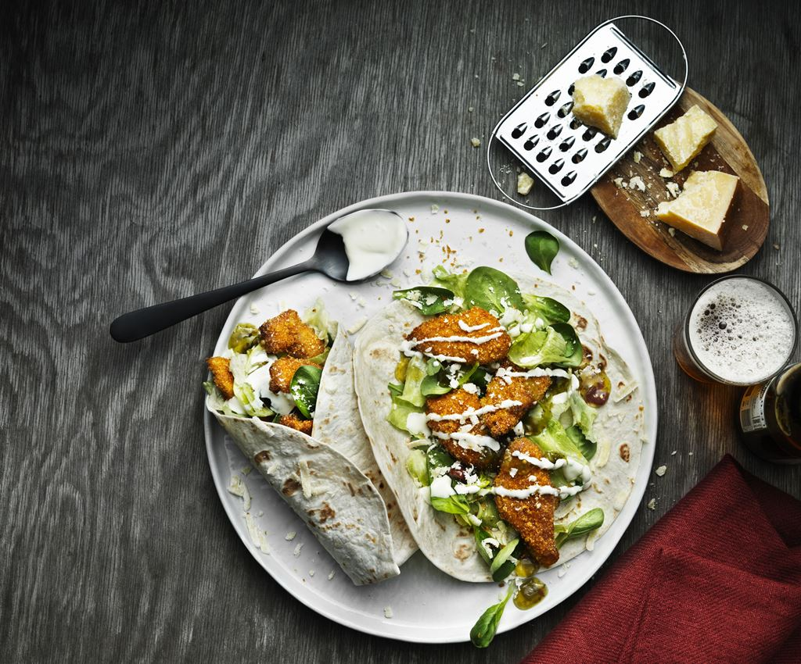

Krõbekana vrapid

| Koostisosad |
Kogus |
| Santa Maria suuri nisutortiljasid (6tk pakis) |
1 pakk |
| Santa Maria krõbedat paneeringut kanale |
1 pakk |
| Kanafilee |
500grammi |
| Hapukoor |
300grammi |
| Jääsalat |
1 tk |
| Riivitud parmesani juust |
45ml |
| Õli |
2 spl |
| Santa Maria rohelise jalapeno kastet |
~100grammi |
| Santa Maria tšillimajoneesi |
~100grammi |
- Lõigu kanafileed ribadeks ja küpseta paneeringusegu pakendil toodud juhiste järgi.
- Lõigu salat ribadeks ja sega juurde hapukoor.
- Soojenda tortillad ja laota nendele salat ja kanatükid. Kata riivitud parmesani, jalapeno kastme ja tšillimajoneesiga. Voldi kokku ja serveeri kohe.